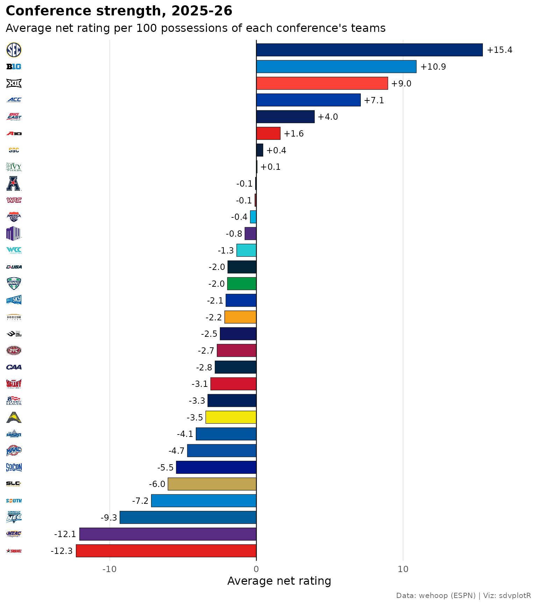
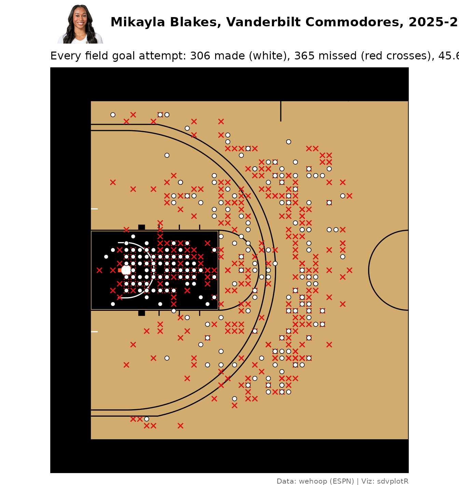
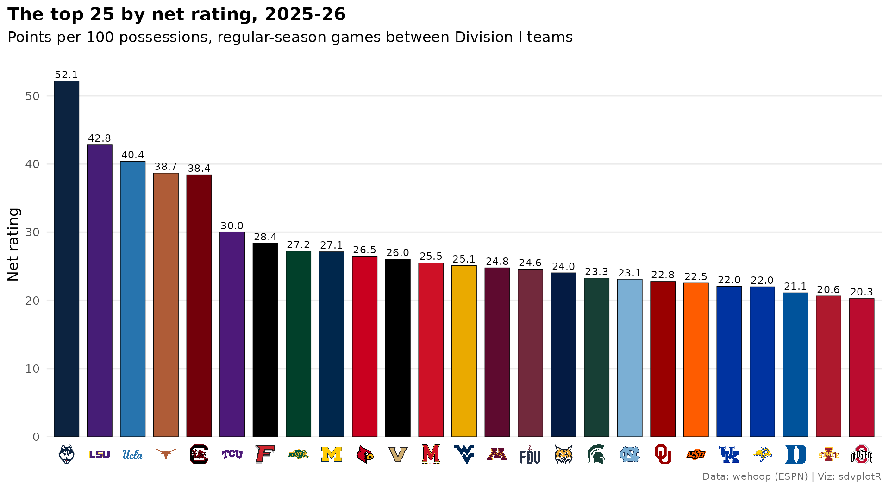
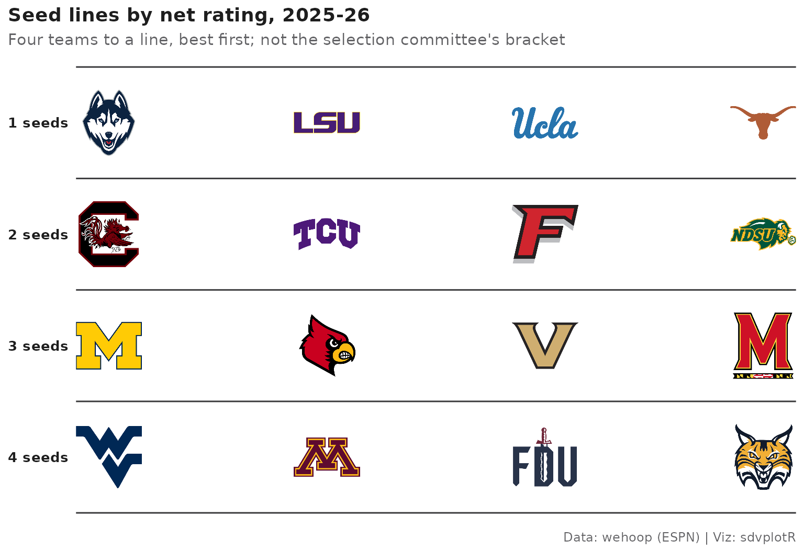
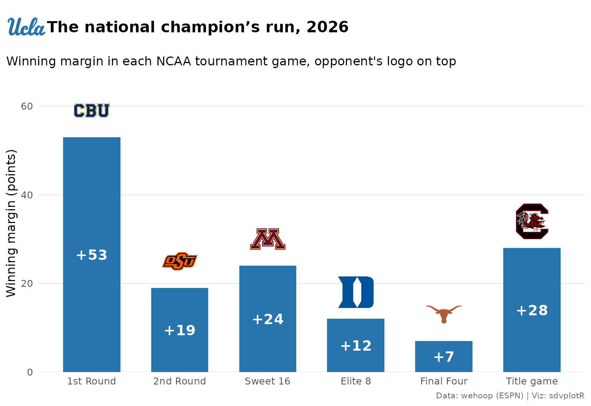
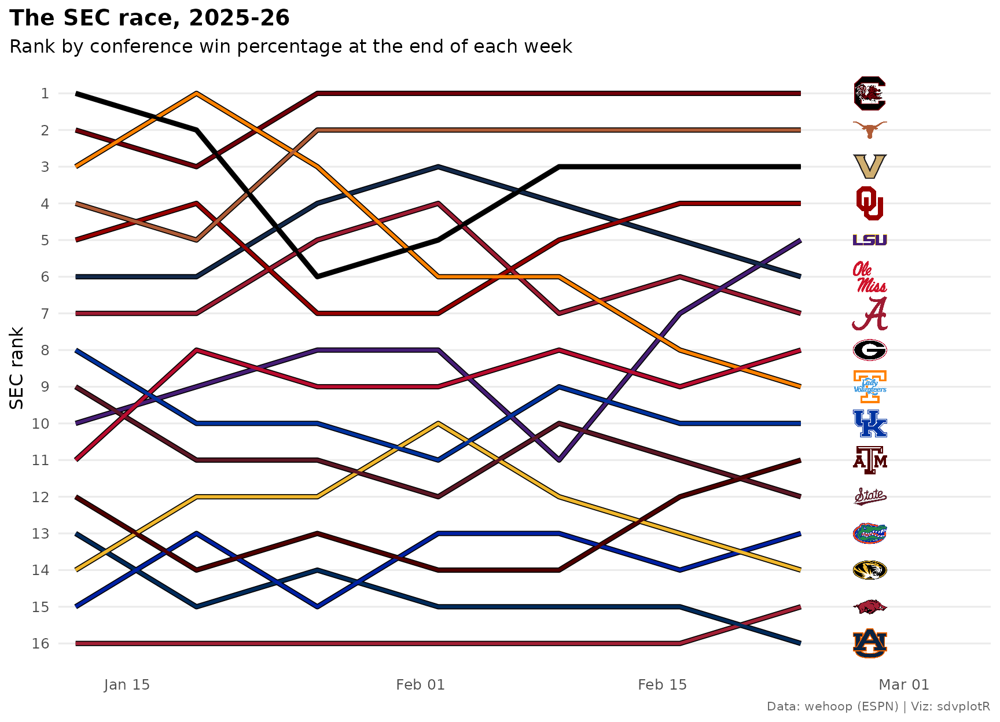

Women's College Basketball Visualizations with wehoop and sdvplotR
Source:vignettes/articles/wbb-viz.Rmd
wbb-viz.RmdOn this page
Division I women’s basketball has more than 360 teams, and each
shares its ESPN id with the school’s men’s team. These ten examples
chart the 2025-26 season: one id for two programs, the efficiency
landscape of the best teams, a conference table, conference strength
with conference logos, a headshot leaderboard, a shot chart on a college
court, a ranked top 25, seed-line tiers, the champion’s tournament run
and a conference race as a bump chart. The data are wehoop’s ESPN release
files on GitHub (load_wbb_*()): box scores, standings,
schedules, player box scores and shots. Nothing here calls
stats.ncaa.org.
Setup
library(sdvplotR)
library(ggplot2)
library(dplyr)
library(tidyr)
library(gt)
season <- 2026 # the 2025-26 season: wehoop names a season by the year it ends
label <- "2025-26"
source_note <- "Data: wehoop (ESPN) | Viz: sdvplotR"
theme_set(
theme_minimal(base_size = 12) +
theme(
plot.title = element_text(face = "bold"),
plot.title.position = "plot",
plot.caption = element_text(color = "grey40", size = 8),
plot.caption.position = "plot",
panel.grid.minor = element_blank()
)
)1. One school id, two programs
ESPN gives a school one team id for its men’s and women’s teams.
sdvplotR keeps them as separate sports, so the sport
argument picks the program: 2633 is the Tennessee Volunteers in
"mbb" and the Lady Volunteers in "wbb", each
with its own name and mark.
wbb_teams <- team_reference("wbb")
nrow(wbb_teams)
#> [1] 364
bind_rows(team_reference("mbb"), wbb_teams) |>
filter(espn_team_id == 2633) |>
select(sport, espn_team_id, team_abbr, team_name)
#> sport espn_team_id team_abbr team_name
#> 1 mbb 2633 TENN Tennessee Volunteers
#> 2 wbb 2633 TENN Tennessee Lady Volunteers
tenn <- data.frame(x = c(1, 2), y = 1, team = "TENN", label = c('sport = "mbb"', 'sport = "wbb"'))
ggplot(tenn, aes(x, y)) +
geom_sdv_logos(aes(team = team), data = tenn[1, ], sport = "mbb", height = 0.6) +
geom_sdv_logos(aes(team = team), data = tenn[2, ], sport = "wbb", height = 0.6) +
geom_text(aes(y = 0.55, label = label), family = "mono", size = 4) +
scale_x_continuous(limits = c(0.4, 2.6)) +
scale_y_continuous(limits = c(0.45, 1.4)) +
labs(title = "One ESPN team id (2633), two marks") +
theme_void() +
theme(plot.title = element_text(face = "bold", hjust = 0.5))Names resolve through the reference, nicknames do not, and ESPN ids
are not keys (join on espn_team_id instead):
clean_team_abbrs(
c("Tennessee", "Tennessee Lady Volunteers", "Lady Vols", "2633"),
sport = "wbb",
keep_non_matches = FALSE
)
#> [1] "TENN" "TENN" NA NA2. The efficiency landscape of the top 36
Box scores are enough for a simple rating: points scored and allowed
per 100 possessions, counting only regular-season games between two
Division I teams, with possessions estimated as FGA - OREB + TOV + 0.475
x FTA (the usual college weight on free throws) and averaged with the
opponent’s. It is a raw rating, not adjusted for schedule. Each team’s
conference comes from the season’s standings; the full name resolves to
the conference’s own key ("American Conference", not
"American", which is American University).
standings <- wehoop::load_wbb_standings(seasons = season)
conferences <- standings |>
distinct(team_id, conference = group_short_name, group_name) |>
mutate(conference_key = clean_team_abbrs(group_name, sport = "wbb")) |>
select(-group_name)
stopifnot(!anyDuplicated(conferences$team_id))
d1 <- wbb_teams$espn_team_id
box <- wehoop::load_wbb_team_box(seasons = season) |>
filter(season_type == 2, team_id %in% d1, opponent_team_id %in% d1) |>
mutate(
poss = field_goals_attempted - offensive_rebounds +
coalesce(total_turnovers, turnovers) + 0.475 * free_throws_attempted
)
box <- box |>
inner_join(
box |> select(game_id, opponent_team_id = team_id, opp_poss = poss),
by = c("game_id", "opponent_team_id")
) |>
mutate(game_poss = (poss + opp_poss) / 2, margin = team_score - opponent_team_score)
ratings <- box |>
group_by(team_id) |>
summarise(
games = n(),
ortg = 100 * sum(team_score) / sum(game_poss),
drtg = 100 * sum(opponent_team_score) / sum(game_poss),
.groups = "drop"
) |>
mutate(net = ortg - drtg) |>
inner_join(select(wbb_teams, team_id = espn_team_id, team = team_abbr, team_name), by = "team_id") |>
left_join(conferences, by = "team_id") |>
arrange(desc(net), team)
nrow(ratings)
#> [1] 363One way to keep logos legible is to zoom to the teams you care about: here the axes hold only the 36 best teams by net rating, so every logo gets room. The subtitle gives the Division I averages, far below and left of every logo. Defense is points allowed, so its axis is reversed to put good defenses on top.
top36 <- head(ratings, 36)
ggplot(top36, aes(ortg, drtg)) +
geom_sdv_logos(aes(team = team), sport = "wbb", width = 0.05) +
scale_y_reverse(expand = expansion(mult = 0.08)) +
scale_x_continuous(expand = expansion(mult = 0.06)) +
labs(
title = paste("The efficiency landscape of the top 36,", label),
subtitle = sprintf(
"Division I averages: %.1f offense, %.1f defense; games between Division I teams only",
mean(ratings$ortg), mean(ratings$drtg)
),
x = "Offensive rating (points per 100 possessions)",
y = "Defensive rating (allowed per 100)",
caption = source_note
)
3. A conference table
The SEC’s 2025-26 standings, with home and road records and the
record against AP-ranked teams. College standings repeat every stat for
each split (home, road, conference, against ranked teams), so the unique
key to pivot on is stat_type. gt_color_pills()
with a fixed domain keeps the margin colors comparable from
one table to the next.
standings |>
filter(group_short_name == "SEC") |>
select(team_id, stat_type, display_value) |>
pivot_wider(names_from = stat_type, values_from = display_value) |>
inner_join(select(ratings, team_id, team, team_name), by = "team_id") |>
mutate(
seed = as.integer(playoffseed),
logo = team,
margin = as.numeric(avgpointsfor) - as.numeric(avgpointsagainst)
) |>
arrange(seed, team) |>
select(seed, logo, team_name, total, vsconf, home, road, vsaprankedteams, margin) |>
gt() |>
tab_header(
title = paste("SEC standings,", label),
subtitle = "Margin is points per game over the whole season"
) |>
cols_label(
seed = "", logo = "", team_name = "Team", total = "Overall", vsconf = "Conf",
home = "Home", road = "Road", vsaprankedteams = "vs AP 25", margin = "Margin"
) |>
tab_source_note(source_note) |>
gt_sdv_logos(columns = logo, sport = "wbb", height = 26) |>
gt_color_pills(margin, digits = 1, domain = c(-40, 40)) |>
gt_theme_athletic() |>
cols_align("left", columns = team_name)| SEC standings, 2025-26 | ||||||||
| Margin is points per game over the whole season | ||||||||
| Team | Overall | Conf | Home | Road | vs AP 25 | Margin | ||
|---|---|---|---|---|---|---|---|---|
| 1 |  |
South Carolina Gamecocks | 36-4 | 15-1 | 18-0 | 11-1 | 14-4 | 27.8 |
| 2 |  |
Vanderbilt Commodores | 29-5 | 13-3 | 18-0 | 7-2 | 7-4 | 19.1 |
| 3 |  |
Texas Longhorns | 35-4 | 13-3 | 20-0 | 7-3 | 16-4 | 28.1 |
| 4 |  |
LSU Tigers | 29-6 | 12-4 | 15-2 | 10-2 | 6-6 | 33.9 |
| 5 |  |
Oklahoma Sooners | 26-8 | 11-5 | 16-2 | 6-3 | 6-8 | 17.3 |
| 6 |  |
Tennessee Lady Volunteers | 16-14 | 8-8 | 9-4 | 7-6 | 2-10 | 6.8 |
| 7 |  |
Kentucky Wildcats | 25-11 | 8-8 | 12-3 | 9-5 | 6-8 | 14.0 |
| 8 |  |
Ole Miss Rebels | 24-12 | 8-8 | 12-2 | 4-6 | 5-8 | 13.1 |
| 9 |  |
Georgia Lady Bulldogs | 22-10 | 8-8 | 12-4 | 6-4 | 3-8 | 11.5 |
| 10 |  |
Texas A&M Aggies | 14-13 | 7-9 | 8-6 | 4-5 | 3-7 | -2.9 |
| 11 |  |
Alabama Crimson Tide | 24-11 | 7-9 | 16-4 | 3-6 | 3-9 | 8.4 |
| 12 |  |
Florida Gators | 18-15 | 5-11 | 12-5 | 2-9 | 1-10 | 6.4 |
| 13 |  |
Mississippi State Bulldogs | 18-13 | 5-11 | 14-5 | 3-7 | 2-8 | 7.7 |
| 14 |  |
Missouri Tigers | 17-17 | 4-12 | 9-8 | 4-7 | 0-9 | -4.1 |
| 15 |  |
Auburn Tigers | 15-17 | 3-13 | 9-7 | 3-8 | 1-10 | -3.6 |
| 16 |  |
Arkansas Razorbacks | 12-20 | 1-15 | 9-9 | 1-10 | 0-9 | -5.6 |
| Data: wehoop (ESPN) | Viz: sdvplotR | ||||||||
4. Conference strength, with conference logos
Conferences are rows in sdvplotR too, with logos and colors, so a
chart of conferences works the same way as a chart of teams:
scale_y_sdv() draws the conference marks on the axis and
scale_fill_sdv() fills each bar in the conference’s color.
Each bar is the average net rating of the conference’s teams.
ratings |>
filter(!is.na(conference_key)) |>
group_by(conference_key) |>
summarise(teams = n(), net = mean(net)) |>
arrange(desc(net), conference_key) |>
mutate(conference_key = factor(conference_key, levels = rev(conference_key))) |>
ggplot(aes(net, conference_key, fill = conference_key)) +
geom_col(width = 0.75, color = "black", linewidth = 0.2) +
geom_vline(xintercept = 0, linewidth = 0.4) +
geom_text(
aes(label = sprintf("%+.1f", net), hjust = if_else(net > 0, -0.15, 1.15)),
size = 3.2
) +
scale_fill_sdv(sport = "wbb") +
scale_y_sdv(sport = "wbb", size = 18) +
scale_x_continuous(expand = expansion(mult = 0.12)) +
labs(
title = paste("Conference strength,", label),
subtitle = "Average net rating per 100 possessions of each conference's teams",
x = "Average net rating",
y = NULL,
caption = source_note
) +
theme_y_sdv() +
theme(legend.position = "none", panel.grid.major.y = element_blank())
#> Warning in png::readPNG(get_file(path), native = TRUE): libpng warning: iCCP:
#> known incorrect sRGB profile
#> Warning in png::readPNG(get_file(path), native = TRUE): libpng warning: iCCP:
#> known incorrect sRGB profile
#> Warning in png::readPNG(get_file(path), native = TRUE): libpng warning: iCCP:
#> known incorrect sRGB profile
#> Warning in png::readPNG(get_file(path), native = TRUE): libpng warning: iCCP:
#> known incorrect sRGB profile
5. A scoring leaderboard with headshots
Player box scores carry ESPN athlete ids:
gt_sdv_headshots() turns them into headshots and
gt_sdv_logos() the team abbreviations into logos. A light
theme keeps dark logos readable. Only Division I teams count, a player’s
team is the one she played for last, and leaders need at least 20
games.
players <- wehoop::load_wbb_player_box(seasons = season) |>
filter(season_type == 2, !did_not_play, team_id %in% d1)
leaders <- players |>
arrange(game_date) |>
group_by(athlete_id, athlete_display_name) |>
summarise(
games = n(),
team_id = last(team_id),
headshot_url = last(athlete_headshot_href),
ppg = mean(points, na.rm = TRUE),
fg_pct = sum(field_goals_made, na.rm = TRUE) / sum(field_goals_attempted, na.rm = TRUE),
fg3_pct = sum(three_point_field_goals_made, na.rm = TRUE) /
sum(three_point_field_goals_attempted, na.rm = TRUE),
.groups = "drop"
) |>
filter(games >= 20) |>
arrange(desc(ppg), athlete_id) |>
head(10) |>
inner_join(select(ratings, team_id, team, team_name), by = "team_id")
leaders |>
mutate(rank = row_number(), headshot = athlete_id, logo = team) |>
select(rank, headshot, athlete_display_name, logo, team_name, games, ppg, fg_pct, fg3_pct) |>
gt() |>
tab_header(
title = paste("Division I scoring leaders,", label),
subtitle = "Regular season, 20 or more games"
) |>
cols_label(
rank = "", headshot = "", athlete_display_name = "Player", logo = "",
team_name = "Team", games = "GP", ppg = "PPG", fg_pct = "FG%", fg3_pct = "3P%"
) |>
fmt_number(ppg, decimals = 1) |>
fmt_percent(c(fg_pct, fg3_pct), decimals = 1) |>
tab_source_note(source_note) |>
gt_sdv_headshots(columns = headshot, sport = "wbb", height = 42) |>
gt_sdv_logos(columns = logo, sport = "wbb", height = 28) |>
gt_theme_sofa()| Division I scoring leaders, 2025-26 | ||||||||
| Regular season, 20 or more games | ||||||||
| Player | Team | GP | PPG | FG% | 3P% | |||
|---|---|---|---|---|---|---|---|---|
| 1 |  |
Mikayla Blakes | |
Vanderbilt Commodores | 31 | 27.0 | 45.8% | 36.1% |
| 2 |  |
Audi Crooks |  |
Iowa State Cyclones | 30 | 25.5 | 64.7% | 9.1% |
| 3 |  |
Hannah Hidalgo |  |
Notre Dame Fighting Irish | 32 | 25.2 | 48.1% | 25.0% |
| 4 |  |
Mia Nicastro |  |
Western Illinois Leathernecks | 31 | 24.2 | 52.2% | 38.8% |
| 5 |  |
Hannah Wickstrom |  |
UC Riverside Highlanders | 29 | 23.4 | 48.5% | 34.0% |
| 6 |  |
Shay Ciezki |  |
Indiana Hoosiers | 31 | 22.8 | 52.6% | 44.6% |
| 7 |  |
Jaloni Cambridge |  |
Ohio State Buckeyes | 33 | 22.8 | 49.0% | 34.6% |
| 8 |  |
Adrianna Smith |  |
Maine Black Bears | 32 | 22.8 | 45.1% | 33.3% |
| 9 |  |
Liv McGill | |
Florida Gators | 31 | 22.5 | 43.1% | 26.4% |
| 10 |  |
Halli Poock |  |
Murray State Racers | 34 | 22.4 | 43.6% | 34.8% |
| Data: wehoop (ESPN) | Viz: sdvplotR | ||||||||
6. A shot chart on a college court, with a headshot in the title
load_wbb_shots() holds ESPN’s shot locations in feet
from center court, which wehoop has already converted to the frame
sdv_surface()’s sportyR court draws, so they need no
conversion (sdv_court_coords() is only for the stats-API
legacy frame). Two cleanups first: free throws are placed at the rim,
and a shot with no location carries a placeholder of about ±215 million.
Then fold both halves onto one basket. ggtitle_image() puts
the scorer’s headshot beside the title; it takes an image URL as well as
a team. The leader plays for Vanderbilt, whose black and gold match the
painted area and the wood, so the shots are drawn in white and red
rather than team colors.
star <- slice(leaders, 1)
shots <- wehoop::load_wbb_shots(seasons = season) |>
filter(
athlete_id_1 == star$athlete_id,
!grepl("FreeThrow", type_text),
abs(coordinate_x) <= 47, abs(coordinate_y) <= 25
) |>
mutate(
right = coordinate_x > 0,
x = if_else(right, -coordinate_x, coordinate_x),
y = if_else(right, -coordinate_y, coordinate_y)
)
sdv_surface("wbb", star$team, display_range = "defense") +
geom_point(
aes(x, y),
data = filter(shots, !scoring_play),
shape = 4, color = "#D7191C", size = 1.7, stroke = 0.9
) +
geom_point(
aes(x, y),
data = filter(shots, scoring_play),
shape = 21, fill = "white", color = "black", stroke = 0.4, size = 2
) +
ggtitle_image(
title_image = star$headshot_url,
title = paste0("**", star$athlete_display_name, "**, ", star$team_name, ", ", label),
image_height = 48,
subtitle = sprintf(
"Every field goal attempt: %d made (white), %d missed (red crosses), %.1f%%",
sum(shots$scoring_play), sum(!shots$scoring_play), 100 * mean(shots$scoring_play)
),
sport = "wbb"
) +
labs(caption = source_note) +
theme_title_image(size = 14)
7. A ranked top 25, logos on the axis
The top 25 by net rating, as columns. scale_x_sdv()
swaps the team abbreviations on a discrete horizontal axis for logos;
the factor order sets the bar order.
head(ratings, 25) |>
mutate(team = factor(team, levels = team)) |>
ggplot(aes(team, net, fill = team)) +
geom_col(width = 0.75, color = "black", linewidth = 0.2) +
geom_text(aes(label = sprintf("%.1f", net)), vjust = -0.4, size = 3) +
scale_fill_sdv(sport = "wbb") +
scale_x_sdv(sport = "wbb", size = 18) +
scale_y_continuous(expand = expansion(mult = c(0, 0.08))) +
labs(
title = paste("The top 25 by net rating,", label),
subtitle = "Points per 100 possessions, regular-season games between Division I teams",
x = NULL,
y = "Net rating",
caption = source_note
) +
theme_x_sdv() +
theme(legend.position = "none", panel.grid.major.x = element_blank())
#> Warning in png::readPNG(get_file(path), native = TRUE): libpng warning: iCCP:
#> known incorrect sRGB profile
#> Warning in png::readPNG(get_file(path), native = TRUE): libpng warning: iCCP:
#> known incorrect sRGB profile
8. Tiers as seed lines
The NCAA tournament seeds four teams to a line, so seed lines make natural tiers: the top four by net rating on the 1 line, the next four on the 2 line, and so on. This is a seed list from one rating, not the committee’s bracket. On the Tiermaker’s dark background each team draws its dark-background logo, so West Virginia’s navy mark comes out white.
tiers <- head(ratings, 16) |>
mutate(tier_no = (row_number() - 1) %/% 4 + 1) |>
select(tier_no, team)
sdv_team_tiers(
tiers,
sport = "wbb",
title = paste("Seed lines by net rating,", label),
subtitle = "Four teams to a line, best first; not the selection committee's bracket",
caption = source_note,
tier_desc = c("1" = "1 seeds", "2" = "2 seeds", "3" = "3 seeds", "4" = "4 seeds"),
alpha = 1,
width = 0.1
)
9. March: the champion’s run
The schedule’s notes_headline names each NCAA tournament
game. Find the title game’s winner, then chart its six wins: the margin
of each, the opponent’s logo on top, and the champion’s logo beside the
title through ggtitle_image(), which takes a team
abbreviation as well as a URL.
schedule <- wehoop::load_wbb_schedule(seasons = season)
ncaa <- schedule |>
filter(grepl("^NCAA Women's Basketball Championship", notes_headline))
final <- filter(ncaa, grepl("National Championship", notes_headline))
champion_id <- if_else(final$home_winner, final$home_id, final$away_id)
champion <- wbb_teams$team_abbr[wbb_teams$espn_team_id == champion_id]
run <- ncaa |>
filter(home_id == champion_id | away_id == champion_id) |>
arrange(game_date) |>
transmute(
round = sub("National Championship", "Title game", sub(".* - ", "", notes_headline)),
round = factor(round, levels = unique(round)),
opponent_id = if_else(home_id == champion_id, away_id, home_id),
margin = if_else(home_id == champion_id, home_score - away_score, away_score - home_score)
) |>
inner_join(select(wbb_teams, opponent_id = espn_team_id, opponent = team_abbr), by = "opponent_id")
ggplot(run, aes(round, margin)) +
geom_col(fill = sdv_team_colors(champion, sport = "wbb"), width = 0.65) +
geom_text(aes(y = margin / 2, label = paste0("+", margin)), color = "white", fontface = "bold", size = 5) +
geom_sdv_logos(aes(y = margin + 6, team = opponent), sport = "wbb", height = 0.13) +
scale_y_continuous(expand = expansion(mult = c(0, 0.05)), limits = c(0, max(run$margin) + 11)) +
ggtitle_image(
title_image = champion,
title = paste0("**The national champion's run, ", season, "**"),
image_height = 40,
subtitle = "Winning margin in each NCAA tournament game, opponent's logo on top",
sport = "wbb"
) +
labs(x = NULL, y = "Winning margin (points)", caption = source_note) +
theme_title_image(size = 15) +
theme(panel.grid.major.x = element_blank())
10. The SEC race, week by week
A conference race as a bump chart: rank the SEC’s teams by conference
win percentage at the end of each week, then draw one line per team in
its color with its logo at the finish. The schedule’s
conference_competition flag marks conference games, and a
game with a notes_headline is a conference-tournament game,
so it is left out. Ties are broken by conference point differential,
then by abbreviation, so the same data always draw the same chart.
conference_games <- schedule |>
filter(season_type == 2, conference_competition, is.na(notes_headline) | notes_headline == "") |>
distinct(game_id)
sec <- filter(ratings, conference == "SEC")
weekly <- box |>
semi_join(conference_games, by = "game_id") |>
filter(team_id %in% sec$team_id) |>
mutate(week = as.Date(cut(game_date, "week", start.on.monday = TRUE))) |>
group_by(team_id, week) |>
summarise(wins = sum(team_winner), games = n(), margin = sum(margin), .groups = "drop") |>
complete(team_id, week, fill = list(wins = 0, games = 0, margin = 0)) |>
arrange(team_id, week) |>
group_by(team_id) |>
mutate(across(c(wins, games, margin), cumsum)) |>
ungroup() |>
inner_join(select(sec, team_id, team), by = "team_id") |>
filter(week >= sort(unique(week))[3]) |> # the first two weeks hold a game or two
arrange(week, desc(wins / pmax(games, 1)), desc(margin), team) |>
group_by(week) |>
mutate(rank = row_number()) |>
ungroup()
finish <- filter(weekly, week == max(week))
ggplot(weekly, aes(week, rank)) +
geom_line(aes(group = team), color = "black", linewidth = 1.6) +
geom_line(aes(color = team), linewidth = 1) +
geom_sdv_logos(aes(x = week + 4, team = team), data = finish, sport = "wbb", width = 0.04) +
scale_color_sdv(sport = "wbb") +
scale_y_reverse(breaks = 1:16) +
scale_x_date(date_labels = "%b %d", expand = expansion(add = c(1, 7))) +
labs(
title = paste("The SEC race,", label),
subtitle = "Rank by conference win percentage at the end of each week",
x = NULL,
y = "SEC rank",
caption = source_note
) +
theme(legend.position = "none", panel.grid.major.x = element_blank())